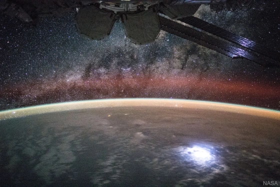
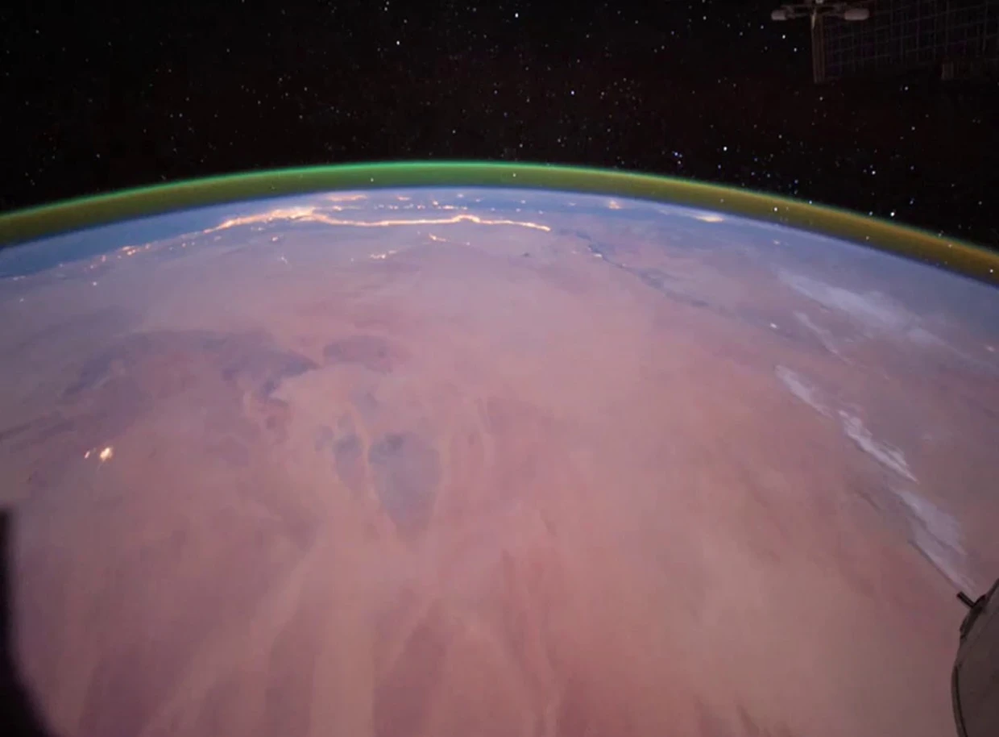
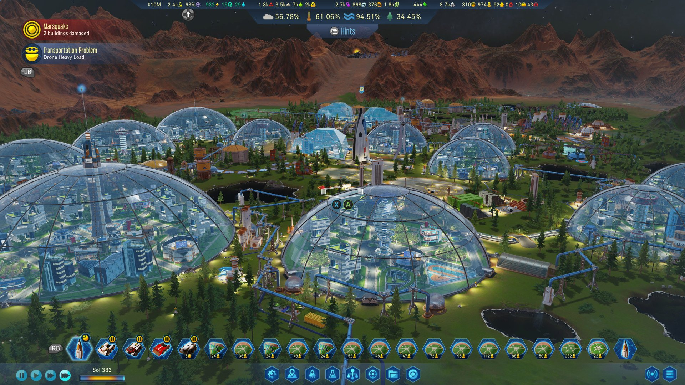
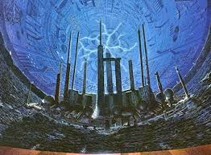
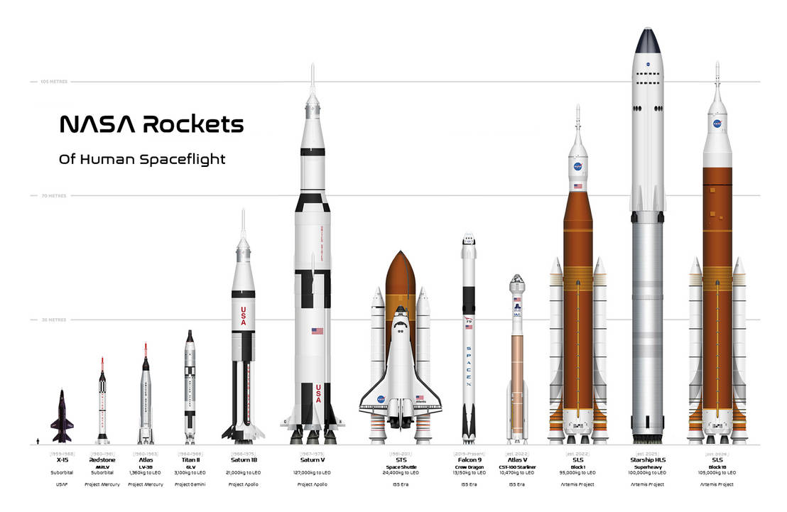

How do we know where to go?
-
Auroras, along with spectroscopy, can help us understand an analyze a planet's atmosphere upon close inspection
-
Mars's aurora (right), as seen by the European Space Agency's Trace Gas Orbiter, is caused by interactions of sunlight, oxygen, and a magnetic field caused by a rotating molten metalic core

How can we survive on other planets?
-
One way is with "biodomes"
-
These allow us to control a portion of the atmospthere
-
Biodomes can be erected while we "terraform" a new planet, or build a more permanent base inside of the moon
-
Or we can use biodomes in place of conquering and terraforming a whole planet

What about traveling/living between bodies?
-
Aurthur C. Clarke's Rama featured a civilization traversing the cosmos inside a giant spinning asteroid. (Greg Bear also wrote the Eon series, which also imagines life along "The Way" inside an asteroid with a hyperdimensional-beam that spans every galaxy)
-
The spin provided an artificial gravity. If big enough, these structures can have their own weather patterns.
-
"Less" ambitious plans may be to create a mothership
-
A fleet of spacecraft would consume prodigious ammounts of resources if it were not self-sustaining or needed any sort of propellants like modern rockets require

How has leaving Earth benefited humanity?
-
There are many technologies that space travel have given to society
-
Wireless headsets, LED lighting, portable cordless vacuums, freeze-dried foods, memory foam, scratch-resistant eyeglass lenses and so much more have come from space! (Space exploration, that is)
-
Space travel and rocket technologies have also created a whole new infrastructure from a century ago
-
Remember when telegraph wires spaned the Atlantic? Me either! But we don't need to run messages over thousands of miles of cable! We have GPS, global television coverage, world wide web, cellular services, and instantaneous global contact thanks to satellites, orbital physics, and rocketry!
Check out the progression of rockets over the last 75 years below!